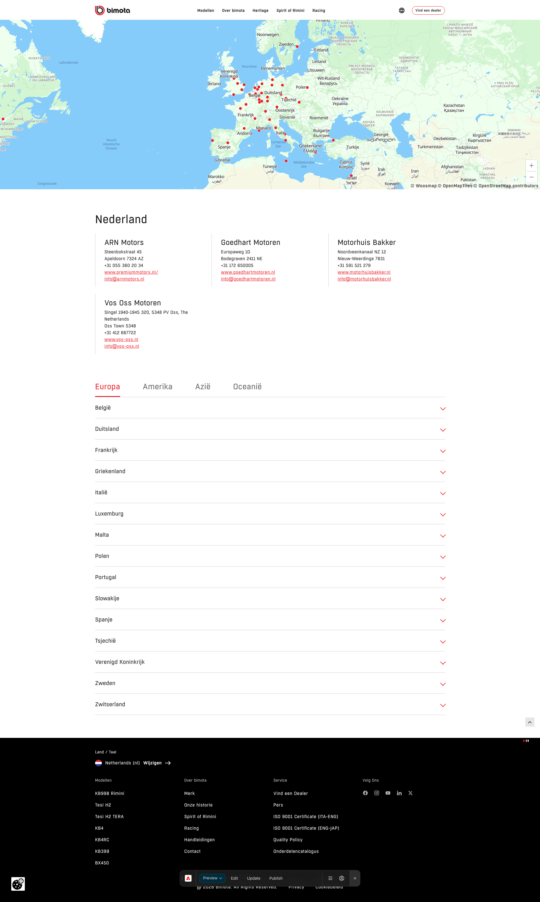

Woosmap Dealers
Local + global dealer listings, auto-grouped by country/region, sourced from Woosmap.
The Woosmap Dealers block renders dealer listings sourced live from Woosmap, in one of two variants: local dealers (this country only) or global dealers (every other country, grouped by region). Together with the Dealer Locator map, this is what powers the Dealer Page – Tabs template.
Local Dealers — country-dealers variant
- Shows dealers only from the current country (the country the site/locale is running in)
- Display: a country title heading, the dealer list laid out in a maximum of 3 columns, with vertical separators between columns
Global Dealers — global-dealers variant
- Shows dealers from all other countries besides the current one
- Excludes any countries listed in
exclude_countries(default:jp,ph) — any country code can be added here to hide it from this section - Includes any dealer IDs listed in
dealer_idstoreeven if their country would otherwise be excluded (default example keeps 2 PH dealers and 1 JP dealer visible) - Display: tabs by region (Europe, Americas, Asia, Oceania), with the first tab always the region of the current country, an accordion per country inside each region tab, and dealers listed in 3 columns, alphabetically sorted
Why this matters for you as an author
You don't maintain any of this by hand. Once the block is configured with the right exclude_countries / dealer_idstore values (usually set up once by a developer per site), the “Other Dealers” section reorganizes itself automatically — by region, with the visitor's own region shown first — as dealers are added or removed in Woosmap.
What you fill in
| Variant: country-dealers (local) | Shows dealers only from the current site's country. |
| Variant: global-dealers | Shows dealers from all other countries. |
| exclude_countries (global-dealers only) | Country codes to hide entirely from the global section. Default: jp, ph. Any country code can be added here to exclude it. |
| dealer_idstore (global-dealers only) | Specific dealer IDs to force-include even if their country is in exclude_countries. Default example: 990033, 990030, 990031 (2 PH dealers + 1 JP dealer kept visible despite the default exclusion above). |

The two Woosmap Dealers instances (local + global) as authored inside the Dealer Page – Tabs template.
Copy/paste snippet
| woosmapdealers (country-dealers) | | |---|---| | woosmapdealers (global-dealers) | | |---|---| | exclude_countries | jp, ph | | dealer_idstore | 990033, 990030, 990031 |